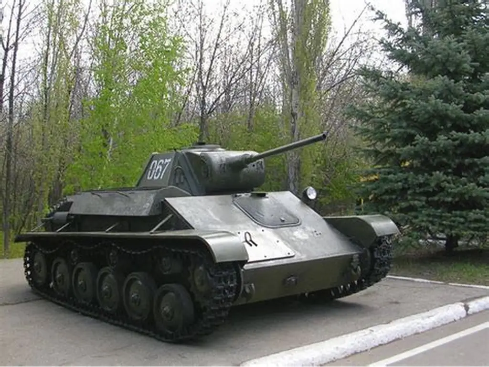
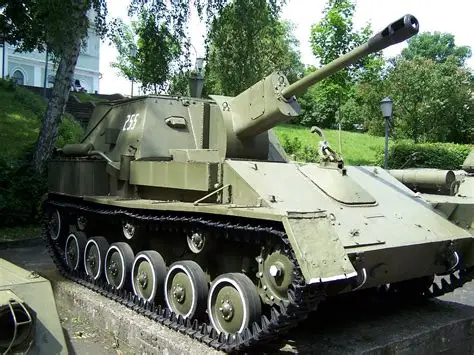
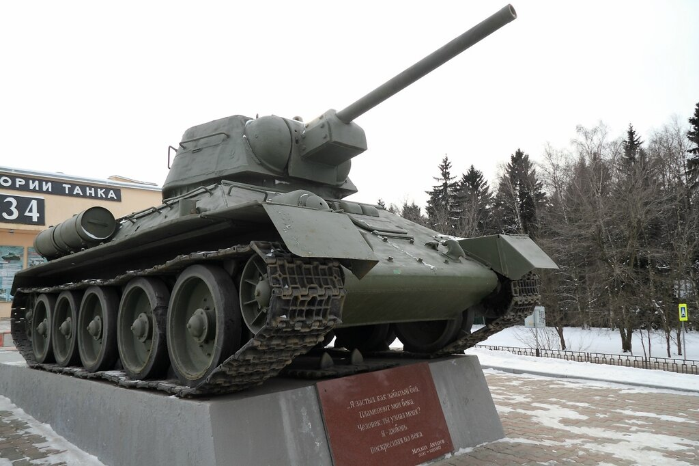
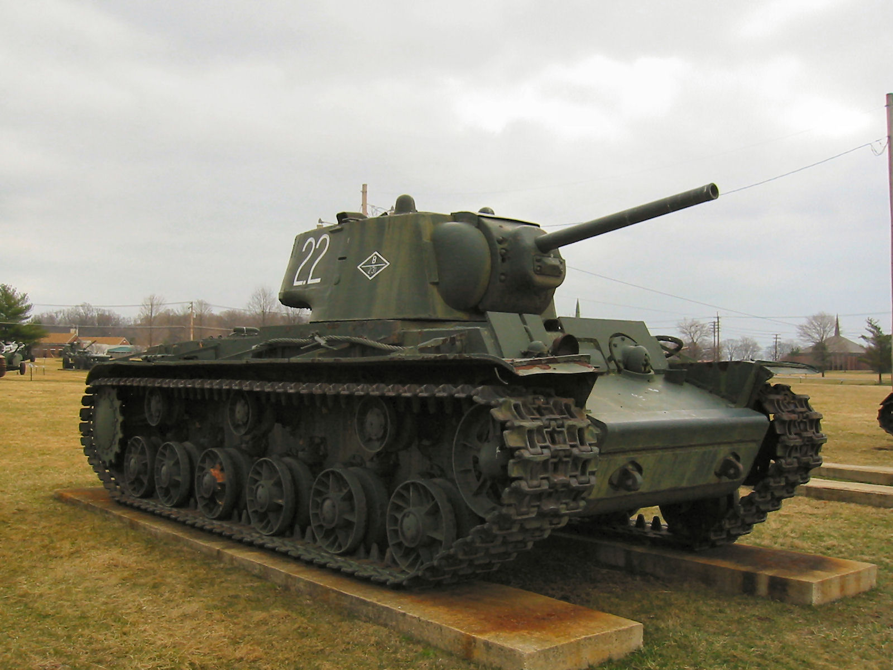
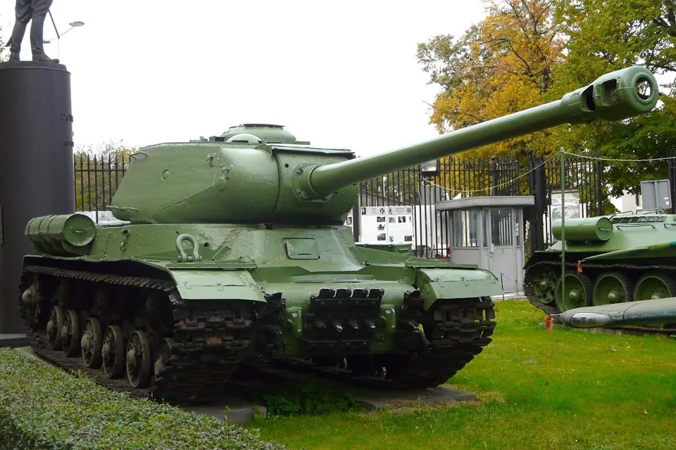
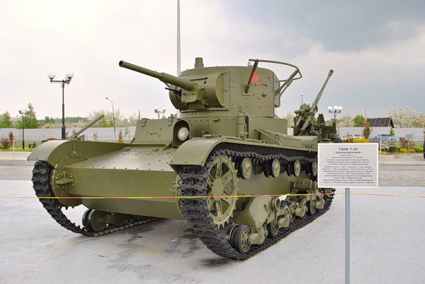
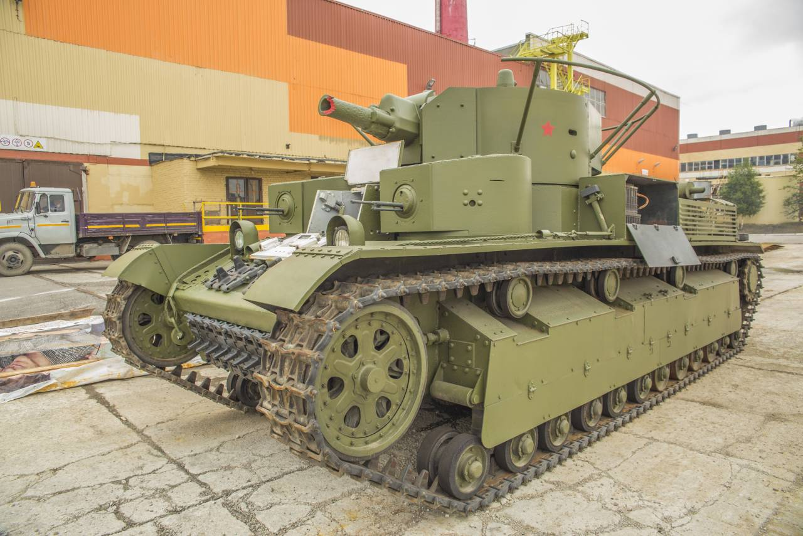
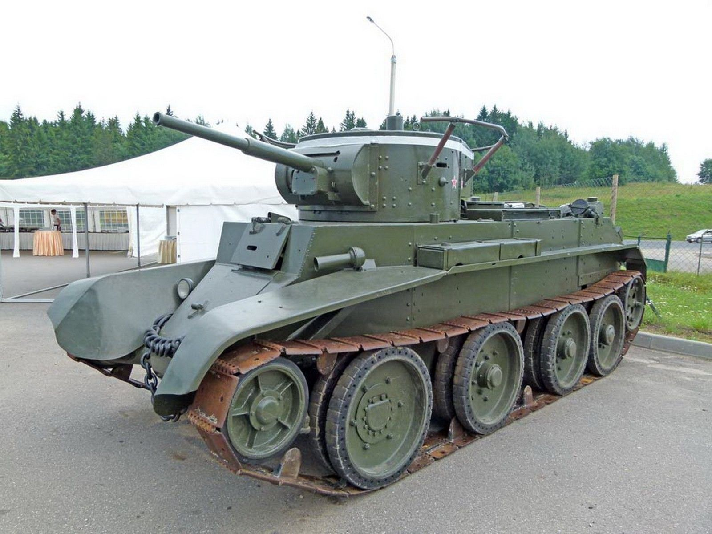

Список танков СССР, произведённых и/или использовавшихся в годы ВОВ
    

Т-26Т-26 представляет собой советский легкий танк, созданный на основе британского танка Vickers Mk E (также известного как «Виккерс 6-тонный»), закупленного в 1930 году. Советский танк Т-26 был принят на вооружение в СССР в 1931 году.
Танк Т-26 является самым многочисленным танком Красной и финской Армий к началу Великой Отечественной войны и Армии испанской Республики гражданской войны в Испании, второй по количеству выпущенных после Т-34 советский танк 1930-х — 1940-х годов.

Т-28В 1930-е годы, когда Советский Союз активно формировал бронетанковые силы для реализации доктрины «глубокой операции», средний танк Т-28 стал одной из первых попыток создать мощную машину для прорыва укреплений и поддержки пехоты. Разработанный в 1931–1932 годах на Ленинградском заводе «Большевик» при участии КБ завода №174, Т-28 представлял собой многобашенный танк массой около 28 тонн, вооружённый 76-мм пушкой и пулемётами.
Несмотря на ограниченное применение в Великой Отечественной войне, Т-28 заложил основы для советских средних танков, повлияв на Т-35 и Т-34. В эпоху, когда РККА училась манёвренной войне, Т-28 стал символом амбиций и инженерных экспериментов, доказывая, что даже «гиганты» 1930-х внесли вклад в танковую мощь СССР.

БТ-7Танк БТ-7, продолжатель знаменитой серии советских «быстроходных танков» (БТ), стал одной из ключевых разработок бронетехники 1930-х годов. Созданный на основе идей американского инженера Джона Уолтера Кристи, этот лёгкий танк сочетал высокую скорость, манёвренность и улучшенные характеристики по сравнению со своим предшественником, БТ-5. БТ-7 стал символом советской инженерной мысли и сыграл важную роль в предвоенной модернизации Красной армии.
БТ-7 стал важным шагом в эволюции советского танкостроения. Его подвеска Кристи и опыт эксплуатации легли в основу танка Т-34, который стал легендой Великой Отечественной войны. Массовое производство БТ-7 позволило Красной армии накопить опыт в создании и применении крупных танковых соединений, что сыграло ключевую роль в будущих победах. В культурном плане БТ-7 был символом советской мощи, появляясь в пропагандистских материалах и парадах.